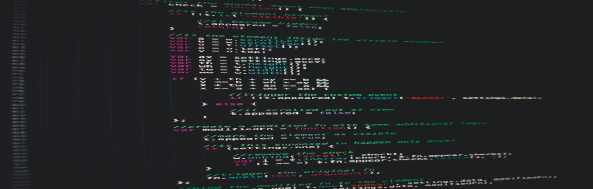

Post #1
O trabalho remoto já era um assunto em pauta e agora se mostra cada vez mais necessário e totalmente possível para diversos mercados. Com o distanciamento social muitas empresas tiveram que adaptar suas mentalidades e tecnologias para o trabalho a distância, procurando formas de manter a produtividade e comunicação.